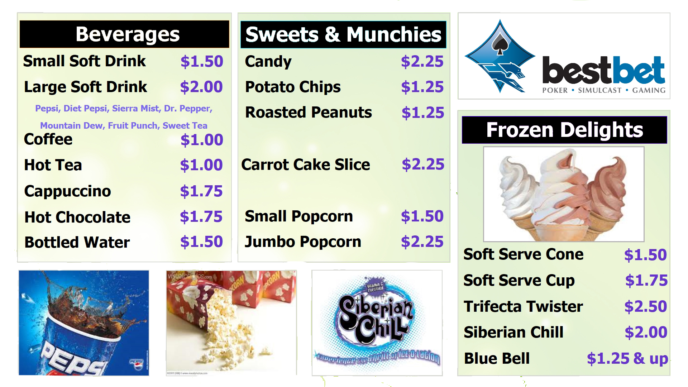

×

BUFFALO BANJO
COUNTRY STORE & SNACK BAR
Some of our best-selling gear appeals to car-campers, preppers, and survivalists. From Axes and Knives to blade sharpeners and waxed-canvas packs from our friends at Frost River in Duluth, and extending to beautifully crafted Northwoods Jewelry, we stock quality pieces that our customers need. You might not think you'd find custom knives and exclusive bushcraft accessories at a canoe camping shop, but that's just what we carry with pride.
We have a wide variety of canoe gear, canoeing accessories, camping gear, clothing, books, tools, paddles, treats and gifts for you to choose from. Enjoy your visit!
OUR SNACK BAR MENU

WHERE TO FIND US
(567)543-9785
345 WATERVIEW RD
CITY,STATE
Wild River Rapids
Mouse over the image:

Map of Wild River Rapids